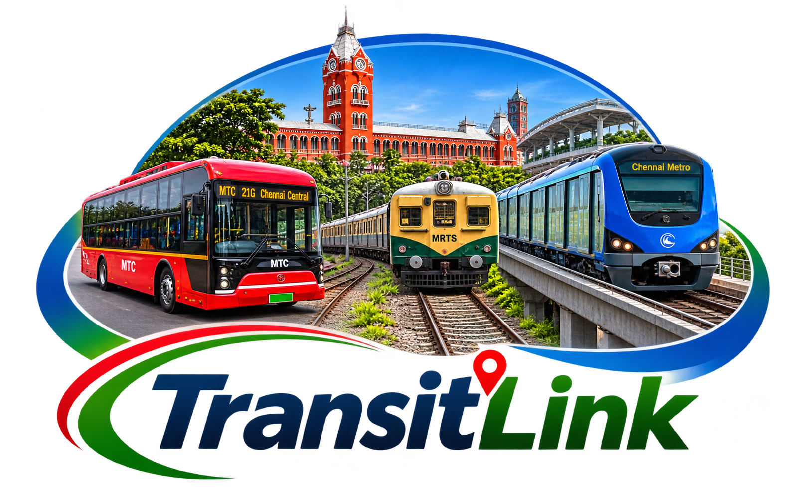

Find your way through Chennai.
From a sunrise at Marina to the ride home, find your way across Chennai. Compare bus, Metro and train journeys, and see where to board and change.

Just arrived in Chennai?
Choose where you arrived, then look up your destination by landmark or stop.
Plan & Routes
Use your location to find nearby boarding stops?
Routes & stops
MTC Bus
Metro
Suburban / MRTS
Rail network maps
Drag to move the map. Pinch or use + and − to zoom.
Station data from DataMeet and © OpenStreetMap contributors. Coastline from Natural Earth.
Drag to move. Pinch or use + and − to zoom. Tap a station pin for its timetable.
© OpenStreetMap contributors · ODbL
Station boards
Schedule only · no operator update feed connected.
Metro
Estimated times. Intermediate arrivals and departures share the same estimated station time.
| Service | Arrival (IST) | Departure (IST) | Direction |
|---|
No more trains scheduled here today.
Suburban / MRTS
Scheduled times from the suburban timetable and added MEMU schedules.
Fast and semi-fast locals stop at selected stations and skip others. Check that your destination is a listed stop.
| Service | Arrival (IST) | Departure (IST) | Direction |
|---|
No more trains scheduled here today.
Map
Drag to move. Pinch, double-tap, or use + and − to zoom.
Map credits
© OpenStreetMap contributors · Open Database License (ODbL)
Explore Chennai & beyond
Find a beach, a museum, or your next match. Pick a category or search by place or neighbourhood.
No places match these filters.
Saved trips
Rerun a saved journey using the current Chennai time.